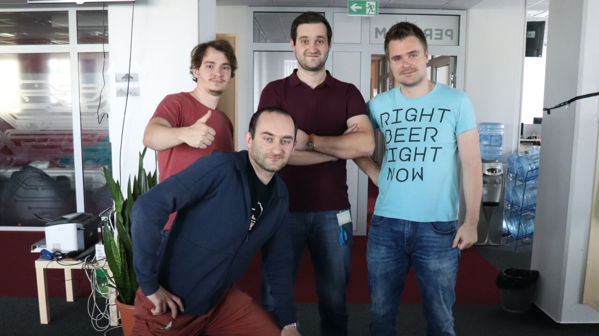
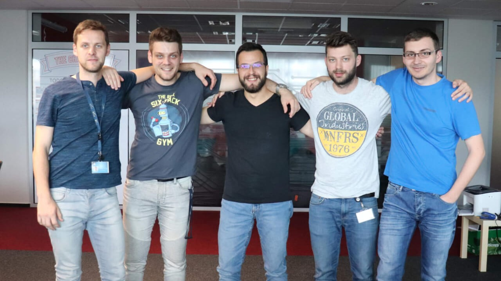
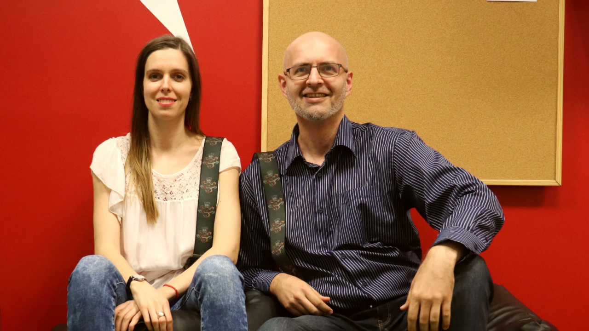
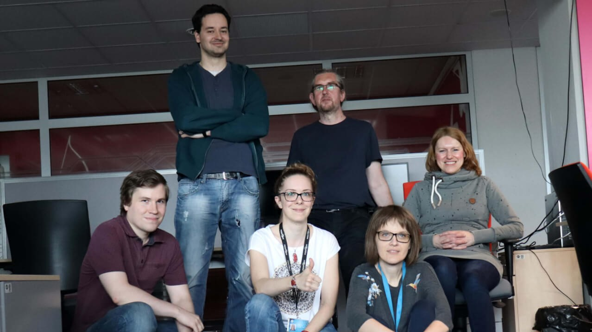

World-Class streaming service
Our client is a leading sports content provider with more than 1000 employees worldwide and 5 development
centers in London, Leeds, Amsterdam, Katowice and Košice. Among its flagship products are popular
subscription-based video streaming service Dazn.com (also known as Netflix of sport), most visited football
portal in the world Goal.com and official WTA streaming service Wtatv.com.
In our Košice office
we focus mostly on development of media platform and content management system. Most of the development work
on these systems is done in Java with usage of popular frameworks such as Spring, Hibernate and GWT. Our
platform relies both on relational Oracle SQL database and Elasticsearch NoSQL database engine. We also have
specialized big data team that harnesses the power of technologies such as Scala, Hadoop, Spark and Neo4j
graph database as well as specialized frontend team masterfully crafting web pages in TypeScript and React.
We are strong believers in automation, our automated tests are mostly written in Python with the usage of
Selenium framework, our infrastructure is fully automated using Puppet and Ansible, while our CI pipeline is
fully scripted in Groovy.
Our project has a strong agile mentality and decisive “build it – own
it” attitude. Our development process is driven by SCRUM framework and values of courage, focus, commitment,
respect and openness. We are also strong believers in roles over titles approach, cross-functional teams and
building a people with T-shaped skills.


DAZN Kosice Teams

Pripravujeme celú platformu pre editorov a následne publikujeme tento kontent. Teda vytvárame/meníme kontent nakoniec ho publikujeme. Zozbieravame prílohy formou športu/geolokácie/hráčov. Kontent predstavuje články ako aj zdieľanie tohto kontentu. Platforma pre športových redakotrov.

Spájame/identifikujeme účty. Triedime,klasifikujeme a ponúkame reklamy podla záujmov {portály},demografie. Spájame userov s DAZN portálom. Zľúčujeme a agregujeme dáta. Aplikujeme vlastné riešenia/nápady a pracujeme s najmodernejšími technológiami.
{kind=link}
Vyvíjame a podporujeme 2 športové stránky. Udržiavame stránky, tvorba podľa požiadaviek zákaznika. Máme vlastné návrhy na zlepšenie stránky. Pripravujeme stránky na nové sútaže. Front-end developments. Sme menší projekt s developerom v anglicku.

Pracujeme na pozadí. Staráme sa o plánovací tool, ktorý notifikuje ostatné systémy, ktoré už sú rozdistribuované.
{kind=link}
Vyvíjame platformy pre webstránky v rámci organizácie za úcelom použitia rovnakých technológií a zrýchlenia. Sú to stránky ako napr. www.Gool.com alebo sportingnews. Tvoríme podporné tooly pre manažment obsahu pre DAZN.
{kind=link}
Automatizujeme proces dodržiavania, vymáhania práv a obmedzení. Sledujeme ako sa vykupujú práva a kontrakty. Následne dohliadame aby sa tieto práva neporušili. Dohliadame aj na platnosť kontraktov a taktiež aj na to či sa tam nenachádzajú zakázané veci/reklamy. Staráme sa o to, čo sa deje na pozadí.

Udržiavame a vytvárame platformu pre ostatné tímy. Staráme sa aj o continous integrations a continous deployment ako aj o nové technológie a upgrady. Snažíme sa o prechod z Puppet na Ansible ako aj o rozdelenie veľkého kódu na menšie. Dokončujeme analýzu Core a rozdelenie na dve časti plus vymazanie nepoužívaného kódu. Staráme sa aj o monitorovanie pravidiel v Githube.

Umožnujeme klientom dopredu si naplánovat nahrávanie športového prenosu ako aj monitorovanie úspešnosti nahrávania/skončenia. Spracúvávame už nahraté videá, tvoríme klipy, zdieľame ich, podávame na dalšie spracovanie alebo archivujeme videá.
{kind=link}
Táto práca ma naučila inému typu myslenia, programovať, nebáť sa nových vecí, tímovej práci. Baví ma tímová práca, dobrá tímová atmosféra.
Božena Velebná
QA Engineer

Táto práca ma naučila zodpovednosti, trpezlivosti, tímovej práci. Rád pracujem na veciach, ktoré majú skutočný výsledok. Teším sa na rast zamestnancov, zodpovednosť za rozhodnutia o projektoch.
Peter Pajkoš
Java Tech Lead / Serior Developer

V práci sa teším super tímu, učeniu sa navzájom, spoznávaniu sveta front-end / web developmentu. Moja práca mi zlepšila logické myslenie a estetický cítenie. V mojej práci milujem flexibilný pracovný čas a zaujímavé teambuildingy.
Jarmila Lichvarova
QA Engineer / Scrum Master